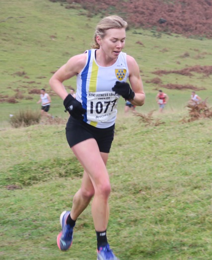

The third race in the 2024/25 Kent Fitness League series took place in Knole Park on Sunday December 1st, 2024, writes Jim Knight.
In mild and misty conditions, a team of 12 organisers from Sevenoaks AC set up the course markings very early in the morning and were joined by a further 20 marshals who would guide the 500 runners from the town car park to the start on Broad Walk and marshal the hilly 5-mile course.
At 9 am the race started, and 27 minutes 26 seconds later, 39-year-old Robert Jakaman from Dartford Harriers crossed the line to win by 35 seconds from Alex Cameron, also from Dartford Harriers.
Jamie Philip, once again, led the Sevenoaks AC men home in 9th position (and 1st M45), followed by Jake Mears in 15th, Guilaume Nineven in 16th, and Ed Saunders in 24th. The other members of the scoring team were Paul Fanti (43rd and 4th M50), Steven Hough (50th and 5th M50), William Palmer (57th and 8th M50), and Keith Dowson (98th and 1st M60).
Once again, there were great performances from our M70’s with Jeremy Winter 1st and Simon Hallpike 2nd.
The men’s team came 3rd, behind Maidstone & Medway AC (2nd) and Petts Wood Runners (1st)
{kind=link}

However, the star performer of the day was, once again, Sevenoaks’ Andrea Berquez, who completed the course in 31minutes11seconds, placing 41st overall and 1st female - 46 seconds ahead of second placed Sarah Brushett from Dartford Harriers. Andrea remains unbeaten in the series so far. She was closely followed by team-mates Nicola Glover (12th and 7th W35), Hannah Sangan (13th), Joanna Rodda (22nd and 5th W45), and Cath Linney (23rd and 2nd W55).
Great performances, also, from our W65 competitors, with Bridgit Weekes 1st, Glenda Goscombe 2nd and Sally Shewell 4th.
The women’s team came 2nd, behind a strong team from Canterbury Harriers but remains in the lead in the series.
Sevenoaks AC combined team were winners on the day and are now leading the series, just one point ahead of Petts Wood.
It was a great effort by everyone in the club, especially Race Director John Stevens and his team of 30 marshals and helpers. A big thank-you to them and the 44 runners who competed for the club.
The full SAC results were:
| Ov Pos | Lg Pos | Bib | Runner | Age | Time | Club | Score | Rtg | # |
|---|---|---|---|---|---|---|---|---|---|
| 9 | 9 | 894 | Jamie Philip | 47 | 29:01 | Sevenoaks AC | V40:1 | 97.68 | 6 |
| 15 | 15 | 1140 | Jake Mears | 20 | 29:21 | Sevenoaks AC | M1 | 95.94 | 2 |
| 16 | 16 | 891 | Guillaume Nineven | 39 | 29:27 | Sevenoaks AC | M2 | 95.65 | 18 |
| 24 | 24 | 899 | Edmund Saunders | 42 | 30:12 | Sevenoaks AC | V40:2 | 93.33 | 29 |
| 40 | 1 | 1077 | Andrea Berquez | 39 | 31:11 | Sevenoaks AC | V35 | 100.00 | 15 |
| 44 | 43 | 860 | Paul Fanti | 51 | 31:20 | Sevenoaks AC | V50:1 | 87.83 | 5 |
| 51 | 50 | 873 | Steven Hough | 51 | 31:41 | Sevenoaks AC | V50:2 | 85.80 | 4 |
| 59 | 57 | 893 | William Palmer | 52 | 32:14 | Sevenoaks AC | M3 | 83.77 | 12 |
| 70 | 67 | 902 | Harvey Taylor | 20 | 32:57 | Sevenoaks AC | NSBLS | 80.87 | 17 |
| 74 | 71 | 881 | Michael Lochead | 44 | 33:14 | Sevenoaks AC | NSBLS | 79.71 | 24 |
| 87 | 82 | 886 | Andrew Monk | 48 | 34:05 | Sevenoaks AC | NSBLS | 76.52 | 13 |
| 93 | 87 | 1141 | Paul Shelley | 50 | 34:28 | Sevenoaks AC | NSBLS | 75.07 | 11 |
| 106 | 98 | 857 | Keith Dowson | 61 | 35:08 | Sevenoaks AC | V60 | 71.88 | 20 |
| 116 | 12 | 864 | Nicola Glover | 36 | 35:30 | Sevenoaks AC | F1 | 93.71 | 18 |
| 120 | 13 | 897 | Hannah Sangan | 30 | 35:36 | Sevenoaks AC | F2 | 93.14 | 8 |
| 125 | 111 | 907 | Daniel Witt | 49 | 35:49 | Sevenoaks AC | NS | 68.12 | 75 |
| 144 | 126 | 875 | David Killpack | 39 | 36:33 | Sevenoaks AC | NS | 63.77 | 13 |
| 148 | 130 | 846 | James Baker | 60 | 36:39 | Sevenoaks AC | NS | 62.61 | 32 |
| 152 | 20 | 868 | Joanna Grobel | 41 | 36:43 | Sevenoaks AC | NSBLS | 89.14 | 4 |
| 157 | 137 | 1138 | Reinhard Kreth | 52 | 36:57 | Sevenoaks AC | NS | 60.58 | Debut |
| 164 | 22 | 896 | Joanne Rodda | 48 | 37:07 | Sevenoaks AC | V45 | 88.00 | 8 |
| 165 | 23 | 880 | Catherine Linney | 55 | 37:13 | Sevenoaks AC | V55 | 87.43 | 52 |
| 174 | 148 | 844 | Brian Allen | 52 | 37:23 | Sevenoaks AC | NS | 57.39 | 9 |
| 187 | 159 | 869 | Rob Hadden | 56 | 37:56 | Sevenoaks AC | NS | 54.20 | 3 |
| 190 | 29 | 1078 | Sophie Day | 36 | 38:00 | Sevenoaks AC | NS | 84.00 | 2 |
| 208 | 172 | 847 | Adam Bates | 41 | 38:33 | Sevenoaks AC | NS | 50.43 | 9 |
| 209 | 173 | 884 | Jonathan Marsh | 64 | 38:39 | Sevenoaks AC | NS | 50.14 | 12 |
| 220 | 39 | 848 | Elizabeth Bull | 37 | 39:13 | Sevenoaks AC | NS | 78.29 | 3 |
| 227 | 40 | 863 | Vanessa Gilmartin | 49 | 39:25 | Sevenoaks AC | NS | 77.71 | 36 |
| 234 | 191 | 885 | Anton Mauve | 58 | 39:56 | Sevenoaks AC | NS | 44.93 | 2 |
| 244 | 46 | 895 | Sarah Philpott | 46 | 40:06 | Sevenoaks AC | NS | 74.29 | 7 |
| 260 | 209 | 906 | Jeremy Winter | 70 | 41:00 | Sevenoaks AC | NS | 39.71 | 12 |
| 261 | 210 | 849 | Peter C | 30 | 41:00 | Sevenoaks AC | NS | 39.42 | 2 |
| 264 | 212 | 882 | Alan Male | 54 | 41:07 | Sevenoaks AC | NS | 38.84 | 10 |
| 273 | 59 | 1083 | Bridgit Weekes | 66 | 41:47 | Sevenoaks AC | NS | 66.86 | 27 |
| 290 | 228 | 871 | Simon Hallpike | 71 | 42:34 | Sevenoaks AC | NS | 34.20 | 64 |
| 300 | 66 | 845 | Clare Ambrose | 56 | 42:50 | Sevenoaks AC | NS | 62.86 | 3 |
| 314 | 242 | 887 | Enrique Montes Gil | 50 | 43:14 | Sevenoaks AC | NS | 30.14 | Debut |
| 320 | 246 | 883 | Simon Mann | 44 | 43:36 | Sevenoaks AC | NS | 28.99 | 4 |
| 387 | 291 | 856 | Chris Desmond | 61 | 46:37 | Sevenoaks AC | NS | 15.94 | 91 |
| 404 | 107 | 865 | Glenda Goscomb | 66 | 47:27 | Sevenoaks AC | NS | 39.43 | 8 |
| 414 | 111 | 900 | Sarah Shewell | 65 | 48:00 | Sevenoaks AC | NS | 37.14 | 130 |
| 473 | 329 | 903 | Richard Thomas | 67 | 53:52 | Sevenoaks AC | NS | 4.93 | 2 |
| 497 | 340 | 901 | Lionel Stielow | 75 | 56:28 | Sevenoaks AC | NS | 1.74 | 29 |
The full results are here.
Men’s team captain, Dan Witt said, “Amazing performance from Jamie to sneak into the top 10, and also Jake and Gui in the top 20. Great performances throughout.” Women’s team captain, Caroline Fenwick added, “Walking to the start, I overheard many comments from other team members such as, 'this is my favourite race' and 'such a great course', whilst they stood taking photos of beautiful Knole park bathed in the morning light. It was wonderful to see a huge turnout by the SAC team, many putting the team first despite other races and commitments. Congratulations to Canterbury Ladies who all ran well, Petts Wood also had a very strong team out. Andrea Berquez ran an incredible race to win and then supported by powerful performances by all the female scorers, Sevenoaks women placed second, and the combined team secured their second win of the season. I'd like to thank ALL the team though. The non-scorers also help our team position, it really is a team effort. We have women in the team of all ages. Some that are new to racing, and some who have raced for over 50 years! They all ran exceptionally well and are part of our incredible SAC team.
The Kent Fitness League is a series of cross-country races between the 18 registered Athletics Clubs in Kent. Any number of club members can compete, but 13 are needed to score in the team competition – 8 men (of whom one must be aged 60+, two must be 50+ and two 40+) and 5 women (of whom one must be aged 55+ one 45+ and one 35+).
The next race in the series will be in Minnis Bay, Birchington on January 5th, 2025.